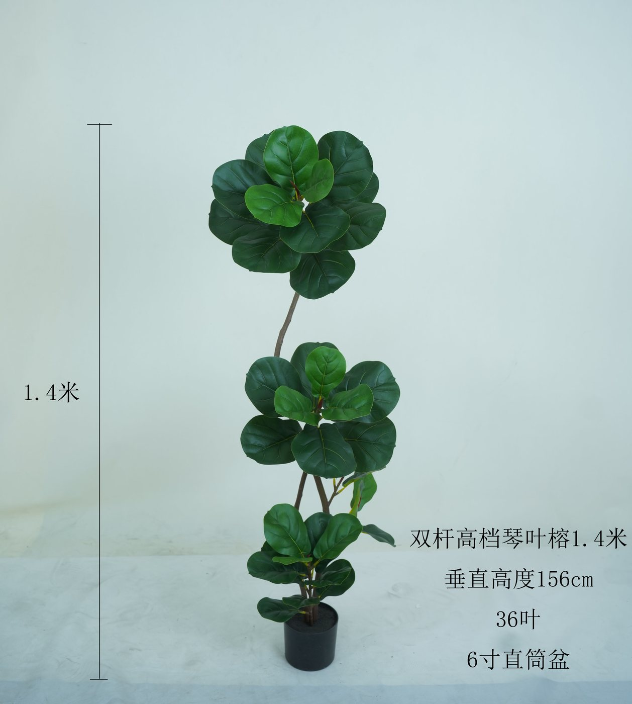
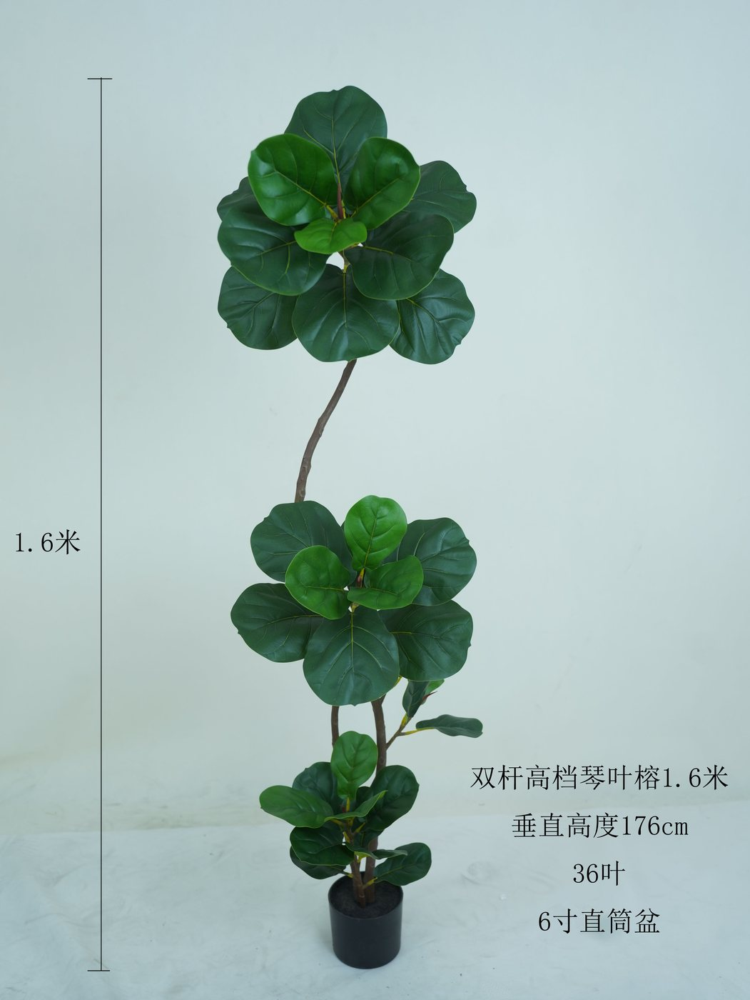
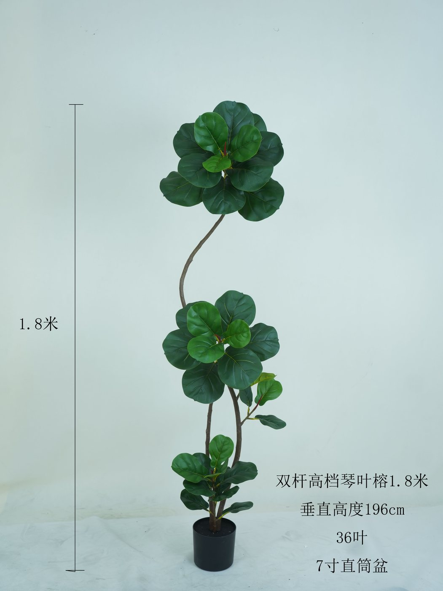

Ficus & Rubber Plants
Double-Stem Fiddle Leaf Fig
Double-Stem Fiddle Leaf Fig is a classic evergreen tree well suited to offices, showrooms, and reception areas. Photos show the actual product; exact dimensions, packing, MOQ, lead time and price are confirmed by the seller on inquiry.
Opens your email application; sending happens there.
Product information
Double-Stem Fiddle Leaf Fig is a classic evergreen tree well suited to offices, showrooms, and reception areas. Photos show the actual product; exact dimensions, packing, MOQ, lead time and price are confirmed by the seller on inquiry.
Specifications
| Product code | LC-N037 |
|---|